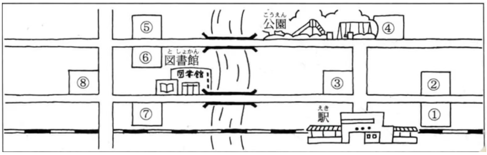

と的指路问路
第31课

郵便局はどこですか。
ーーー駅からまっすぐ行くと、交差点があります。そこを右（みぎ）に曲がって少し歩くと、左（ひだり）にあります。郵便局は2です。
デパートはどこですか。
ーーー駅からまっすぐ行くと、交差点があります。交差点を渡（わた）ると、左の角（かど）にあります。デパートは3です。
市役所どこですか。
ーーー駅からまっすぐ行くと、交差点があります。そこを渡って少し行くと、前に大きい公園があります。市役所は公園の隣にあります。市役所は４です。
駅からまっすぐ行くと、交差点があります。そこを左に曲がって少し行くと、橋があります。橋を渡ると、右にと図書館があります。